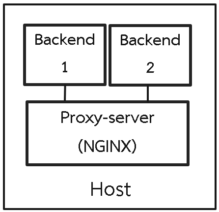
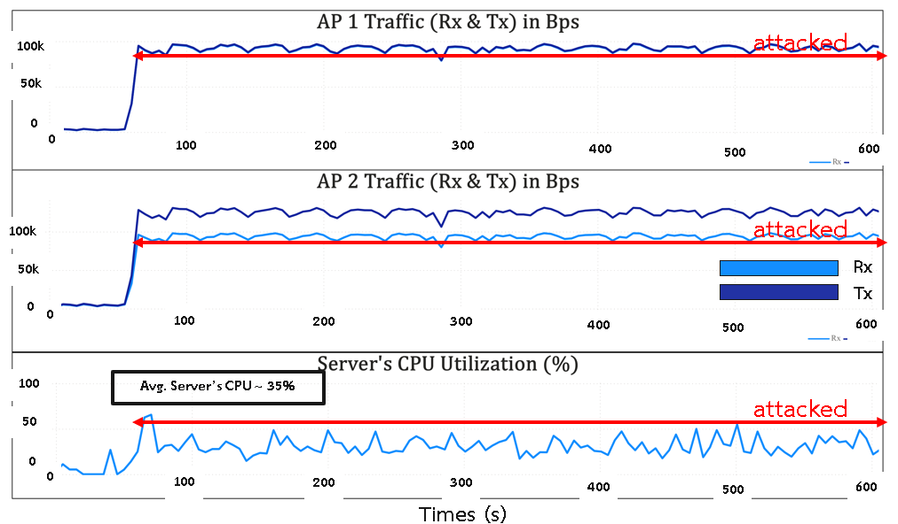
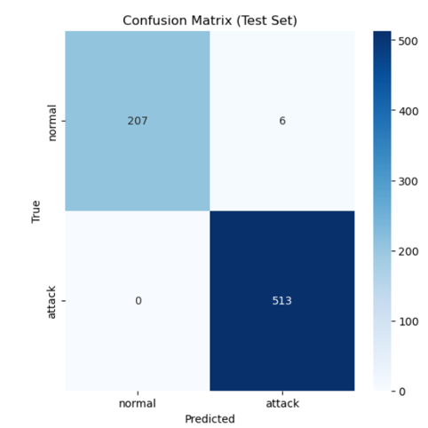
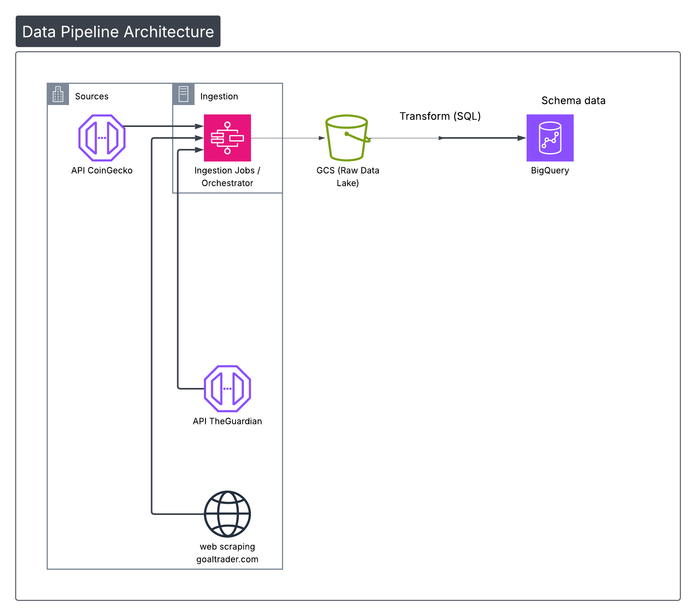
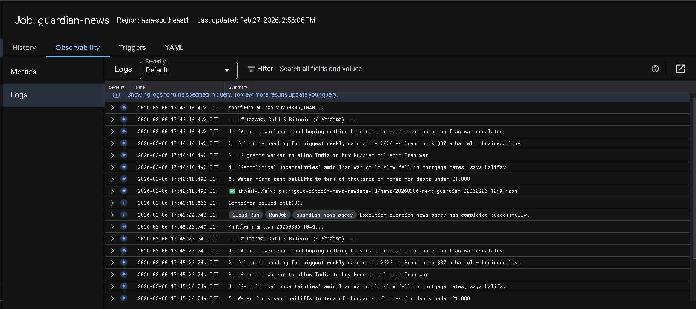
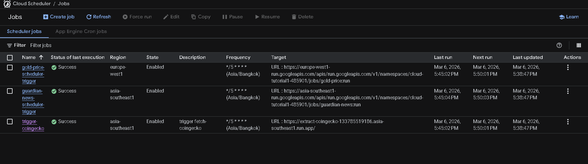
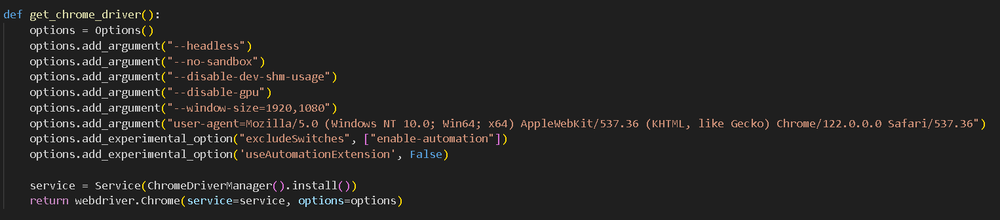
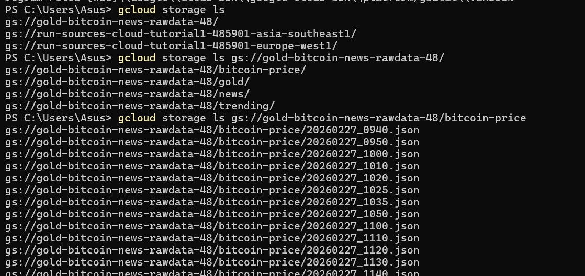
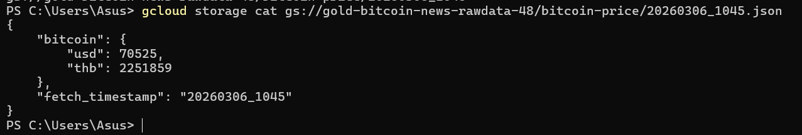
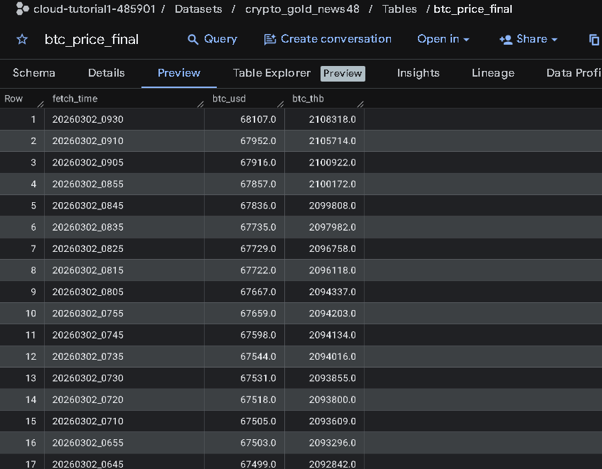

Professional Experience
Production data platforms built and operated at YDM Thailand — pipelines, BI models and internal tools that media teams, client analysts and sales branches use every day. Infrastructure identifiers are omitted and cost figures are rounded.
1. Multi-Platform Ads Performance Pipeline & Self-Service Data Ops Console
Built and operate the agency's central advertising-data platform — around 60 scheduled ETL jobs pulling eight ad and social platforms into BigQuery, modelled in LookML and served through Looker, with a web console that lets the media team repair their own data instead of filing a ticket.
Click for more details
A connector-per-platform design: every platform owns one module holding its authentication, API calls and transforms, and the endpoints are thin orchestrators. Each job runs the same contract — extract → transform with pandas → load to a staging table →
MERGE ... WHEN MATCHED THEN DELETE against production → append. Nothing is ever written straight into a production table, so re-running a job is always idempotent.
Self-healing error handling:
Rather than loading yesterday only, every daily job re-pulls a rolling 14–15 day window and rewrites that whole window. Late-arriving conversions, retroactive platform corrections and an entire failed night all self-correct on the next scheduled run, with no manual backfill. Separate explicit date-range endpoints exist for deliberate historical rebuilds.
Monitoring:
Every job posts its outcome to a Google Chat webhook, so a job that didn't run is visible to the team the same morning instead of surfacing a week later as a wrong number in a client deck. A freshness check reports the most recent data date per channel into the same space.
Self-service console:
A web UI on top of the same service: a three-step wizard (platform → report → date range → Pull Data) with a live execution log and a results summary, plus a management tab for registering endpoints and per-client split views. This is the piece that moved day-to-day data repair from the data team to the people who actually notice the problem.
BI modelling:
Wrote the LookML views and explores over the unified tables and built the Looker dashboards for spend, engagement and conversions — one consistent set of dimensions regardless of which platform a row came from.
Working with the media team:
Ran sessions with the media team to map each platform's ads hierarchy — account → campaign → ad set / ad group → ad — and to agree on what each metric means where the platforms genuinely disagree. That shared vocabulary is what the unified schema encodes. I also wrote a Thai-language pipeline guide that walks through the five layers the data passes, which symptom points at which layer, and where to fix it — so the team can trace a suspicious number themselves.
2. Global Consumer-Electronics Brand — AI-Enriched Social Listening (Share of Voice) Platform
Consultant and architect on a global consumer-electronics brand's Share-of-Voice platform — moving an AI content-classification pipeline out of the vendor's environment into the client's own, fixing the reporting bug that had made the client distrust their own dashboard, and putting a measured accuracy number on the AI labels.
Click for more details
Consulting and advisory rather than pure delivery — I designed the migration, recommended the approach, and presented and defended it to both the client and the data vendor. Day to day that meant translating between the client's reporting expectations, the vendor's collection limits and what the warehouse could actually guarantee.
The nesting fix (why the numbers were wrong):
Brand and product are now modelled as a doubly-nested repeated field and filtered with
EXISTS instead of a join, so one post stays one row no matter how many models it mentions. A separate flattened bridge view is generated for the BI layer, for the cases where a row-per-product genuinely is what you want. The old inflated dashboard was not a metric bug — it was a join against duplicated rows, which is why it had resisted explanation for so long.
AI classification layer:
Three Gemini-labelled axes — Content Ideation, Product Feature and Producer Type — on top of regex product-model matching over message text, OCR and video transcription. I rewrote all three prompts (v1.1 → v1.2), documented the reasoning behind every change along with a hold-out test plan, and treated "has not passed hold-out yet" as a hard blocker on deployment rather than a note.
Measuring the AI (the part I'm most pleased with):
Built an F-score report producing per-axis precision, recall and F1 against the human review sheets. The sheets use a convention where a blank correction means "the AI was right" — which silently hands a free mark to every row nobody opened. I measured how much that mattered (42% of rows in the daily files were unreviewed, all of them the easy cases), added an
--only-validated mode, and documented which number answers which question so nobody quotes the flattering one by accident. Ported the original JS implementation to Python deliberately preserving identical arithmetic, so historical reports stayed comparable.
Operations & correction loop:
Hourly ingestion with a daily re-query of the previous 24 hours to absorb late-arriving posts, plus an hourly refresh of the analysis and BI-facing tables. Analyst corrections from a data-validation UI land in a correction inbox that is drained into the main table each hour — so a mislabelled post is fixed by the person who spotted it, not by an engineer.
Data quality work:
Documented the behaviours that are invisible downstream and silently change results: deduplication rules, which side of the join each column can come from, an engagement feed that can update counts but can never introduce a post, a hand-maintained allow-list behind the non-Thai-caption filter, and a producer taxonomy dirty enough (case collisions, shop names leaking into type fields, a handful of mislabelled brand rows) that it has to be normalised before any grouping.
BI & cost:
Built the LookML project — views, explores and campaign-monitoring dashboards — over the nested model. Separately audited warehouse spend by user, team and dataset to surface which queries were driving cost, and partitioned and clustered the main analysis table. Also supported the client's own data analysts with data preparation for their reporting.
3. Consumer Lending & Insurance Group — BigQuery FinOps & Cloud Run Enablement
Cut the client's daily BigQuery bill by roughly two-thirds by putting a staging/cache layer underneath the dashboards that were full-scanning GA4 on every load — then trained their team to deploy and operate the refresh jobs themselves.
Click for more details
Partitioned cache table → one-time historical backfill → nightly incremental refresh via a Cloud Run job → the view reads the cache. Closed periods are merged rather than recomputed, so the cost of a refresh stays flat as history grows instead of climbing with it.
Why seven days:
GA4's export arrives late and gets amended after the fact. Refreshing a fixed trailing seven-day window absorbs that correction entirely without re-reading history — the specific thing that makes "just cache it" fail in a GA4 pipeline if you only refresh yesterday.
Scope:
Seven views — renewal funnel, new-motor funnel by model (including a v2 using distinct counts), and a monthly SEO traffic-and-conversion view aggregating three GA4 properties across two projects — plus UNPIVOT views that reuse a parent's cache instead of building their own. Rolled out progressively: the renewal funnel is live and carries the measured saving above; the remainder are built, documented and reduced to a one-command deploy, staged for rollout.
What was deliberately left alone:
Lead and booking figures that have to be real-time were kept querying their sources rather than cached. The point of the exercise was to stop paying for a full GA4 scan on every dashboard load, not to cache everything on principle — caching a cheap CTE that needs to be live would have traded a real requirement for a rounding error.
Also on this account:
Built the motor-insurance data service on Cloud Run (FastAPI) that synchronises the warehouse with the customer data platform, email campaign tooling and LINE messaging, batching profile updates and reporting each task's outcome to Google Chat.
4. Automotive Dealer Group — Lead Pipeline & CRM Integration (EV & luxury marques)
Always-on lead pipeline for car dealerships — ad and website form submissions land in the warehouse within the hour and fan out to the dealer group's CRM, branch sales inboxes and per-branch sheets.
Click for more details
Phone numbers normalised to
+66, obvious junk filtered (repeated-digit numbers and similar spam patterns), deduplication on lead id, and test or internal submissions dropped before delivery rather than after. Product tagging is derived from which form the lead came through, so one campaign can collect for several models and still keep them distinguishable downstream.
Delivery reliability:
Every CRM API call and its response is written to a middleware log table. Alongside the hourly job there is a 30-day replay path, so a window that failed can be re-sent without duplicating what already arrived — the same idempotency discipline as the ads pipeline, applied where the cost of a duplicate is a confused customer rather than a wrong chart.
Branch routing:
Company and branch mapping plus lead-source derivation (lead form, website, messenger, LINE) so the CRM receives the attribution the sales team expects, and the notification email reaches the branch that will actually make the call.
A deliberate design choice:
Google Sheets is the shared coordination layer rather than a managed database — chosen because the sales team already lives in sheets, and a pipeline whose output nobody opens is worth less than a slightly inelegant one they use. Raw capture and the cleaned sales-facing view are kept as separate tabs so the system of record is never edited by hand.
Also on this account:
Carried the media and ad-performance ETL and the unified single-view reporting for the same group, including explicit date-range backfill endpoints, plus page-content and social-listening ingestion for brand reporting.
5. Property Developer — CDP Journey Analytics & Offline-Conversion Activation
Turned a property developer's CDP base tables into the customer-journey dashboard their stakeholders had only ever seen as a static design mock — and closed the loop in the other direction, feeding real sales outcomes from the warehouse back into Google Ads.
Click for more details
The deliverable was defined by a finished visual design rather than a requirements document, so the real work was mapping each chart back to what the base tables could truthfully answer — and negotiating with the client's data team where the design assumed a field or grain the models didn't have, rather than quietly bending the numbers to fit the picture.
Journey & cohort modelling:
Online journey paths and behavioural cohorts are modelled as reusable LookML explores over the CDP base tables, not one-off SQL — so the dashboard is one arrangement of them, and the client's analysts can cut the same cohorts by their own questions without a new engineering request.
Offline-conversion upload:
A small Cloud Run service carries sales outcomes recorded by the client's team through validation and formatting into the Google Ads offline-conversion upload, with runtime configuration kept in the deployment environment rather than in code. It is the reverse direction — warehouse back out to the source platform, the pattern usually called reverse ETL — applied where it pays for itself: ad platforms optimising on real sales.
Personal & Academic Projects
Research and self-directed work — where I learned the tools before using them on client systems.
1. Design of Software-Defined Wireless Network for Machine Learning-Driven DDoS Detection and Tiered Response. (IEEE ISCIT 2025, Co-author) [View Publication ↗]
Architected a high-throughput log ingestion pipeline and load balancing infrastructure for real-time network security analytics.
Click for more details
github.com/knotnot/senior-project_server-module

* Architecture diagram of server.
Objective:To build a resilient server environment capable of detecting and mitigating DDoS attacks through automated log analysis and machine learning.
Infrastructure & Pipeline:
Deployed Nginx as a Load Balancer on Ubuntu VMs. Developed a high-frequency ingestion pipeline that parses web traffic logs, extracting features like request volume and packet size every 5-second window.
Data Engineering for ML:
Engineered structured datasets from raw network traffic, performing real-time feature extraction to fuel an anomaly detection model. Loaded the processed data into a MySQL database for historical auditing.
Visualization & Response:
Integrated Power BI for interactive traffic visualization, allowing for manual oversight of network health alongside the automated 98% accuracy ML-driven tiered response system.

* Power BI dashboard showing request rate over time.
Outcome:
Successfully simulated real-world attack scenarios to validate the pipeline's stability. The system effectively blocked malicious IPs while maintaining 100% server uptime during stress tests.

* Confusion matrix showing ML model performance.
2. Global Flight Tracking & Airport Weather Data Pipeline (AWS + Databricks) [View Dataset on Kaggle ↗]
Built an end-to-end Big Data pipeline collecting real-time global flight tracking and airport weather data, processed through Medallion Architecture on Databricks and published to Kaggle.
Click for more details
github.com/knotnot/BIGDATA-Plane-Weather
Architecture:
Designed a Medallion Architecture with Bronze layer storing raw Parquet files on AWS S3 with Hive-style partitioning (year/month/day/hour), and Silver layer containing cleaned, deduplicated data processed by Apache Spark on Databricks.
Data Ingestion:
Built two automated Python ingestion scripts — one polling the OpenSky Network API for global flight state vectors every 5 minutes (~9,000 rows/snapshot), and another collecting weather conditions from Open-Meteo API across 30 major Asia-Pacific airports including Bangkok, Singapore, Tokyo, Dubai, and Sydney.
Data Processing:
Implemented PySpark transformations on Databricks for whitespace normalization, null handling, outlier removal (altitude/velocity bounds), type casting, and deduplication — reducing raw Bronze data by ~2.2% garbage records while preserving full flight trajectories.
Outcome:
Successfully published 900,000+ cleaned flight records paired with weather observations across 30 airports to Kaggle, enabling join analysis between flight behavior and weather conditions by airport ICAO code and timestamp window.
3. Multi-Source Trend & Asset Correlation Pipeline (GCP)
Architected an automated ELT pipeline on Google Cloud Platform to analyze real-time correlations between global news trends, Bitcoin prices, and Gold rates.
Click for more details
github.com/knotnot/gold-bitcoin-news-data

* Architecture diagram of the GCP-based data pipeline.
Objective:To gather data about real-time global news trends (The Guardian) impact the price volatility of Bitcoin (CoinGecko) and Gold (Goldtraders) for market correlation studies.
* Dashboard showing Cloud Run Job execution status.

* Job logs for the The Guardian data extraction task.
Implementation:Developed a hybrid serverless architecture: Cloud Functions for lightweight API calls and Cloud Run Jobs for complex tasks. Orchestrated the entire workflow via Cloud Scheduler to trigger tasks every 5 minutes.

* Cloud Scheduler configuration for task execution.
Challenge:Handled dynamic web content by containerizing Selenium and Chrome Driver within Docker. Successfully deployed these containers to Cloud Run, overcoming the limitations of standard scraping libraries on serverless environments.

* Chrome Driver configuration in the Docker container.
Data Lifecycle:Adopted a Modern Data Stack approach: Storing raw JSON files in Google Cloud Storage (GCS) as a Data Lake. These datasets are integrated into BigQuery using a Unified Execution Timestamp as the Primary Key, enabling precise synchronization and time-series analysis across all data sources.

* Google Cloud Storage data overview.

* Example raw data in Google Cloud Storage (json format).

* Structure of BigQuery data for BTC price Using SQL.
Cost Management:Optimized resource allocation and execution time based on GCP documentation to stay within the Free Tier, ensuring a high-frequency pipeline with near-zero operational costs.